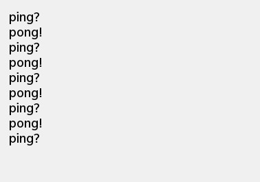

Ping Pong States Example
Files:
- statemachine/pingpong/assets/Balloon.qml
- statemachine/pingpong/assets/main.qml
- statemachine/pingpong/src/main.cpp
- statemachine/pingpong/pingpong.pro
Description
The Ping Pong States example shows how to use parallel states together with custom events and transitions in The State Machine Framework.

This example implements a statechart where two states communicate by posting events to the state machine. The state chart looks as follows:

The pinger and ponger states are parallel states, i.e. they are entered simultaneously and will take transitions independently of eachother.
The pinger state will post the first ping event upon entry; the ponger state will respond by posting a pong event; this will cause the pinger state to post a new ping event; and so on.
/** * The PingEvent class is a custom event that is sent by the pinger state * to the state machine to trigger a transition to the ponger state. */ class PingEvent : public QEvent { public: PingEvent() : QEvent(QEvent::Type(QEvent::User + 2)) { } }; /** * The PongEvent class is a custom event that is sent by the ponger state * to the state machine to trigger a transition to the pinger state. */ class PongEvent : public QEvent { public: PongEvent() : QEvent(QEvent::Type(QEvent::User + 3)) { } };
Two custom events are defined, PingEvent and PongEvent.
/** * The Pinger class is a custom state that sends a PingEvent to * the state machine whenever it is entered. */ class Pinger : public QState { Q_OBJECT public: Pinger(QState *parent) : QState(parent) { } Q_SIGNALS: // This signal is emitted whenever the state is entered void notify(const QString &message); protected: /** * This method is reimplemented from the QState class. * It is called whenever this state is entered. * Note: In this example it will start the ping/pong between the two transitions * by sending the initial PingEvent. */ virtual void onEntry(QEvent *) { // Post a PingEvent to the state machine ... machine()->postEvent(new PingEvent()); // ... and add balloon to the screen. emit notify("ping"); } };
The Pinger class defines a state that posts a PingEvent to the state machine when the state is entered.
/** * The PingTransition is activated whenever the state machine receives a PingEvent. * In that case it will send a PongEvent to the state machine. */ class PingTransition : public QAbstractTransition { Q_OBJECT public: PingTransition() { } Q_SIGNALS: // This signal is emitted whenever the transition is executed void notify(const QString &message); protected: virtual bool eventTest(QEvent *e) { // Allow this transition only if the event is a PingEvent return (e->type() == QEvent::User + 2); } virtual void onTransition(QEvent *) { // Post a PongEvent to the state machine with a delay of 500ms ... machine()->postDelayedEvent(new PongEvent(), 500); // ... and add a balloon to the screen. emit notify("pong"); } };
The PingTransition class defines a transition that is triggered by events of type PingEvent, and that posts a PongEvent (with a delay of 500 milliseconds) to the state machine when the transition is triggered.
/** * The PongTransition is activated whenever the state machine receives a PongEvent. * In that case it will send a PingEvent to the state machine. */ class PongTransition : public QAbstractTransition { Q_OBJECT public: PongTransition() { } Q_SIGNALS: // This signal is emitted whenever the transition is executed void notify(const QString &message); protected: virtual bool eventTest(QEvent *e) { // Allow this transition only if the event is a PongEvent return (e->type() == QEvent::User + 3); } virtual void onTransition(QEvent *) { // Post a PingEvent to the state machine with a delay of 500ms ... machine()->postDelayedEvent(new PingEvent(), 500); // ... and add a balloon to the screen. emit notify("ping"); } };
The PongTransition class defines a transition that is triggered by events of type PongEvent, and that posts a PingEvent (with a delay of 500 milliseconds) to the state machine when the transition is triggered.
/** * In this sample application a state machine is used to alternate between two actions (showing a 'Ping?' and 'Pong!' balloon in the UI). * To trigger the transitions between the two actions, custom events are used instead of signals. */ int main(int argc, char **argv) { Application app(argc, argv); // Create the state machine QStateMachine machine; /** * Create the group state as parallel state. * That means its two child states 'pinger' and 'ponger' * will both be entered by the state machine at the same time. */ QState *group = new QState(QState::ParallelStates); group->setObjectName("group");
The main() function begins by creating a state machine and a parallel state group.
// Create the pinger state ... Pinger *pinger = new Pinger(group); pinger->setObjectName("pinger"); // ... and add a PongTransition to it. PongTransition *pongTransition = new PongTransition(); pinger->addTransition(pongTransition); // Create the ponger state ... QState *ponger = new QState(group); ponger->setObjectName("ponger"); // ... and add a PingTransition to it. PingTransition *pingTransition = new PingTransition(); ponger->addTransition(pingTransition);
Next, the pinger and ponger states are created, with the parallel state group as their parent state. Note that the transitions are targetless. When such a transition is triggered, the source state won't be exited and re-entered; only the transition's onTransition() function will be called, and the state machine's configuration will remain the same, which is precisely what we want in this case.
// Add the group state to the state machine ... machine.addState(group); // ... and mark it as initial state. machine.setInitialState(group); // Start the state machine machine.start(); BalloonCreator balloonCreator; // Load the UI description from main.qml QmlDocument *qml = QmlDocument::create("asset:///main.qml"); qml->setContextProperty("_model", balloonCreator.model()); // Create the application scene AbstractPane *appPage = qml->createRootObject<AbstractPane>(); Application::instance()->setScene(appPage); QObject::connect(pinger, SIGNAL(notify(QString)), &balloonCreator, SLOT(notify(QString))); QObject::connect(pingTransition, SIGNAL(notify(QString)), &balloonCreator, SLOT(notify(QString))); QObject::connect(pongTransition, SIGNAL(notify(QString)), &balloonCreator, SLOT(notify(QString))); return Application::exec(); }
Finally, the group is added to the state machine, the machine is started, and the application event loop is entered.
The balloonCreator object is used to create balloon elements in the UI whenever the pinger, pingTransition or pongTransition send a notification.